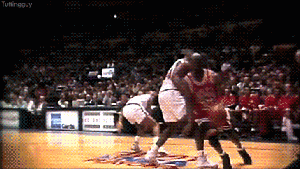
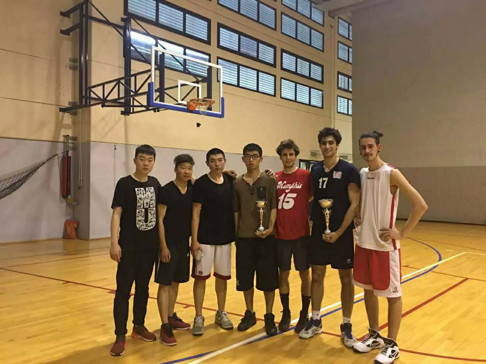
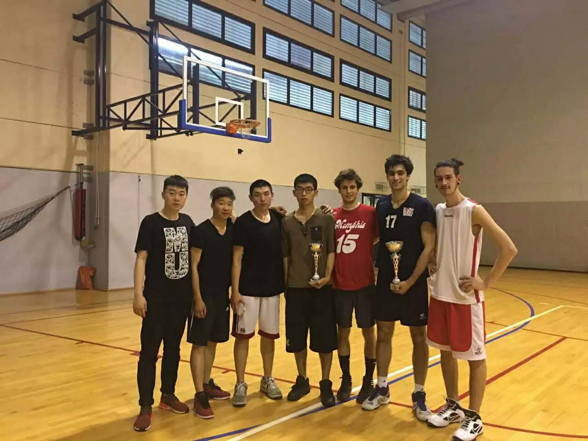

In breve
Mi chiamo Kunhao Zhai,sono Chinese,nato a CHANGSHA,un capoluogo in provincia di HUNAN.
CHANGSHA è una grande città di 10 milioni abitanti che si trova a sud della cina.
Ora vivo a SHENZHEN quando torna in Cina,una città vicino a HONGKONG
Nel 2016,sono arrivato in Italia.Ho studiato italiano a Modena,poi sono entrato
al Politecnico di Milano a Settembre.
Passione
Basketball
Amo giocare a basketball,Ho iniziato a giocare basketball all'età di 8 anni
Ho lasciato molti interessi quando sono entrato al liceo,perche non c'è tempo,
ma giocavo a basketball sempre.
secondo me ,quando non sono felice,vado a giocare basketball e inizia una partita subito,
si può dammi di ritrovare la passione.
Quando riposo io, mi piace guardare l'NBA,KOBE BRYANT e ALLEN IVERSON sono i miei idoli,
poi spesso navigo sul sito di basket e sneakers,per esempio：Hoop
sneakers
 

Durante il mio periodo del studiare italiano a Modena,ho partecipato la partita locale con i miei amici,
siamo arrivati in finale,però lo abbiamo perso.Anche se solo il secondo premio,
ma penso che sia un'esperienza meravigliosa
Chess
Da piccolo,Ho iniziato a gioccare a scacchi.è un calmo gioco.
Mi sembra che sia interessante quando calcola nel gioco degli scacchi.
Ogni gioco,è un viaggio tranquillo e felice.